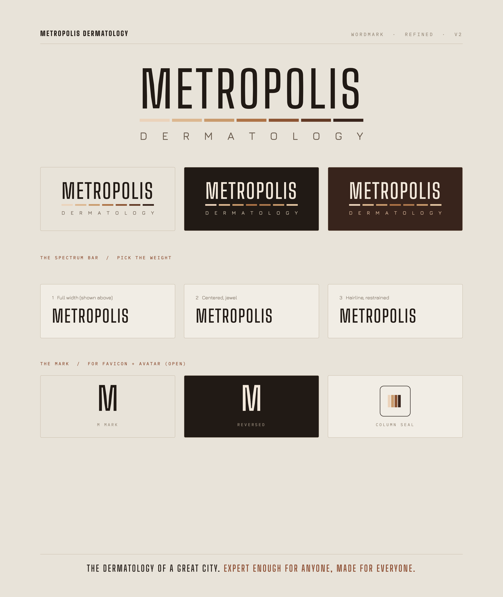
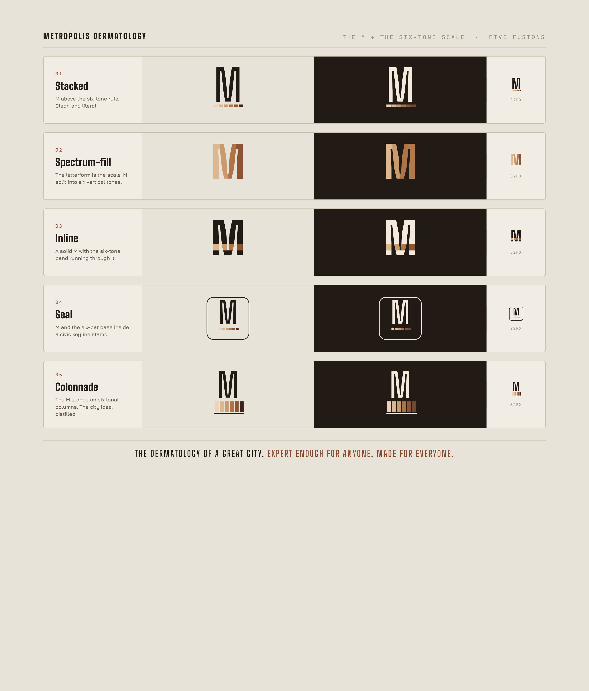
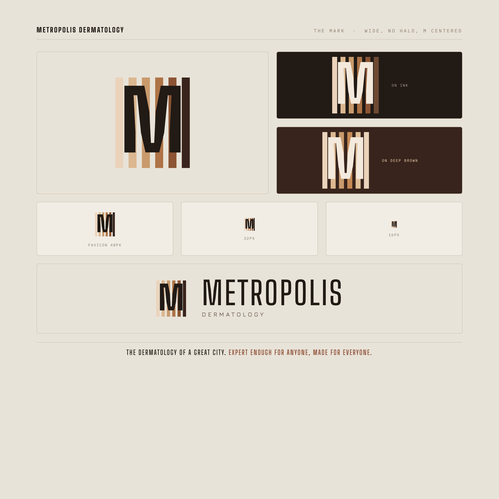
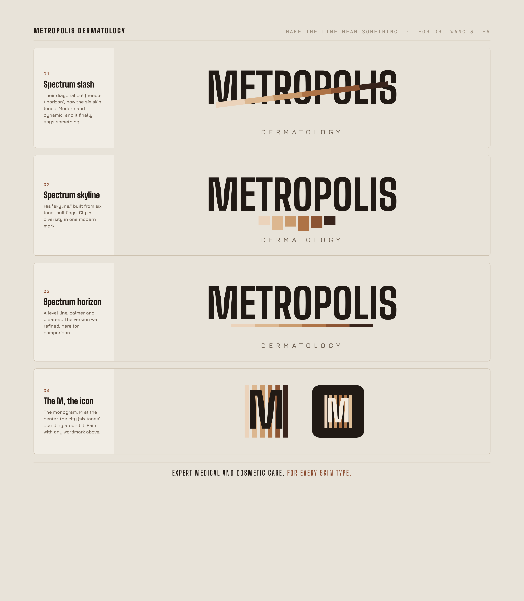
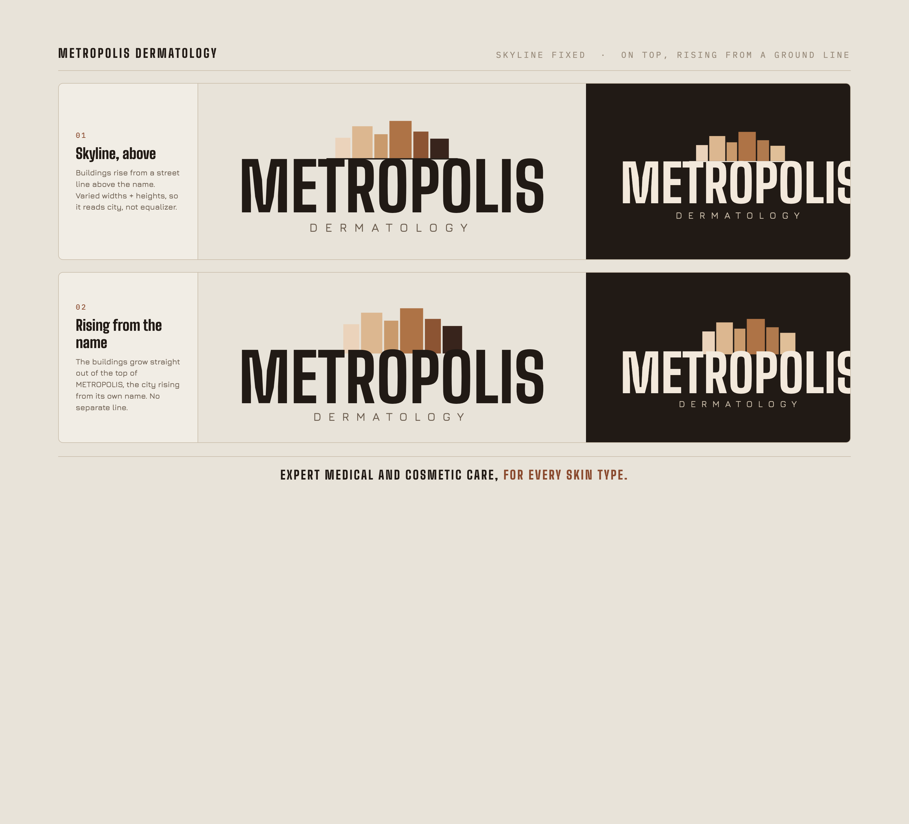
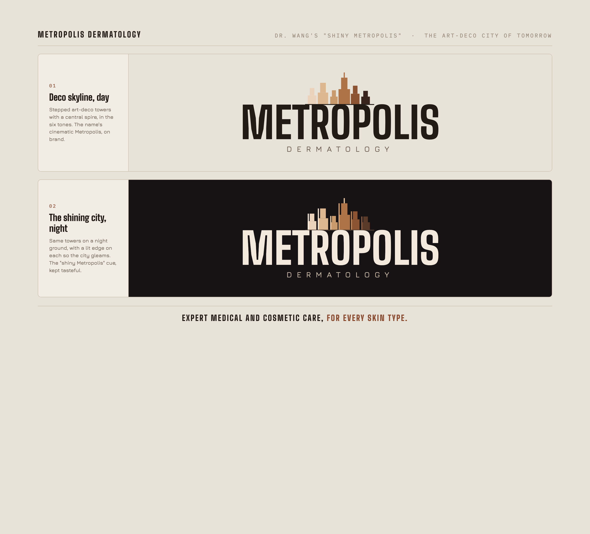
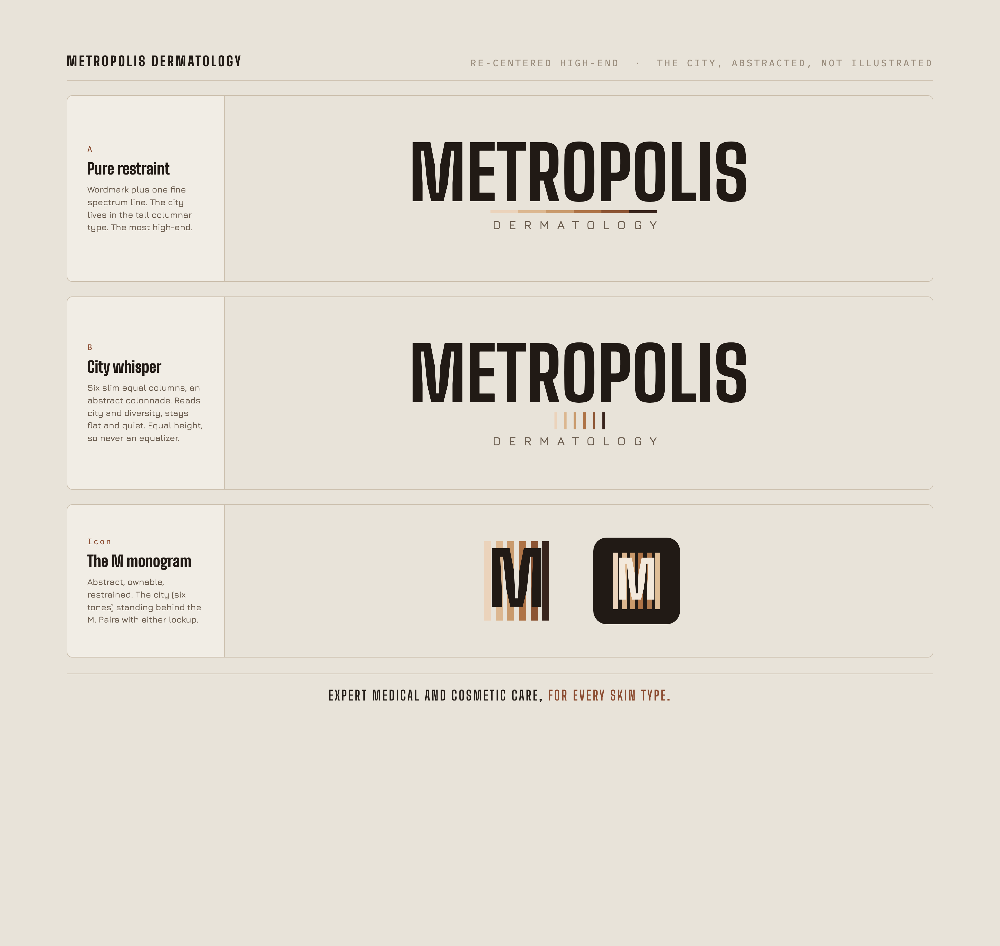

Metropolis Dermatology · Tier3 Media
The civic wordmark, refined (v2). The spectrum bar is the quiet nod to the brand ethos: exactly six tones, one for each Fitzpatrick type I to VI, every skin under one name. Draft direction for review; production vector files come next.
The refined wordmark, v2

The mark, five M + spectrum fusions

The mark, wide, no halo, M centered (grounds + favicon sizes + lockup)

Responding to Dr. Wang, make the "line" mean something (for Tea)

Skyline fixed, on top (not the bottom, where it read as audio levels)

Dr. Wang's "shiny Metropolis" (Superman), read as the art-deco city of tomorrow

Re-centered high-end, the city abstracted (restraint over illustration)

Prepared by Tier3 Media. Draft direction, not for public indexing. Final production kerning and vector/favicon files to follow.